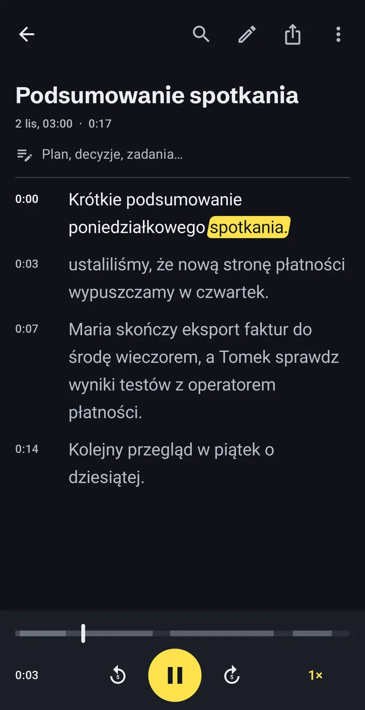
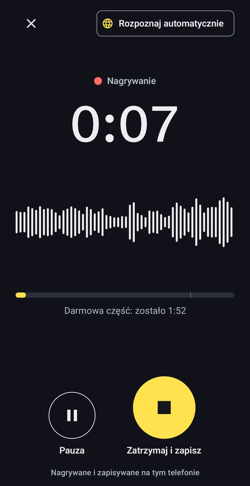
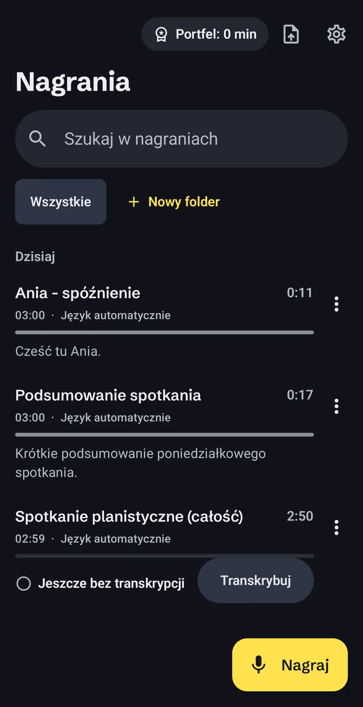
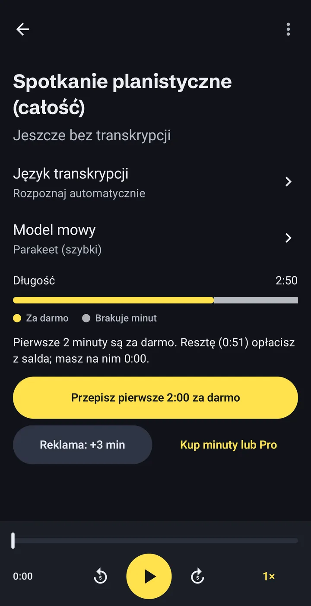

Mowa na tekst bez wysyłania nagrań
Offline Audio Transcriber to aplikacja do transkrypcji audio w całości na telefonie z Androidem. Nagrywasz albo otwierasz plik, a aplikacja zamienia nagranie na tekst: wykład, wywiad, notatkę głosową, plik MP3 albo wideo. Bez konta, bez wysyłania i bez internetu, gdy model mowy jest już na telefonie.
- Konto
- Niepotrzebne
- Model mowy
- 671 MB, pobierany raz
- Za darmo
- 2 min każdego nagrania

Jak działa transkrypcja offline
Trzy kroki, wszystkie na telefonie. Jedyne, co trzeba pobrać, to model mowy, raz.
-
Nagraj albo otwórz plik, który już masz
Skorzystaj z wbudowanego dyktafonu albo zaimportuj plik audio lub wideo, także wiadomość głosową zapisaną z komunikatora.
- MP3
- M4A
- WAV
- OGG
- MP4
- i inne pliki audio i wideo

-
Telefon sam przepisuje nagranie
Model mowy działa na procesorze telefonu, więc dźwięk nigdzie nie wychodzi. Długie nagrania przetwarzają się w tle, a postęp widać w powiadomieniu.
Nagranie godzinne60:00Czas transkrypcji~8:00Nasz własny test na Samsungu Galaxy S23 Ultra. Starsze i tańsze telefony są wolniejsze. -
Czytaj, poprawiaj, eksportuj
Transkrypcja ma znaczniki czasu i podąża za dźwiękiem podczas odsłuchu. Dotknij słowa, żeby przeskoczyć do tego momentu, popraw błędy, przeszukaj tekst i układaj nagrania w folderach.
- TXT
- SRT
- VTT
- Kopiuj
- Udostępnij

Co zostaje na telefonie i kiedy aplikacja łączy się z siecią
Nie ma konta i nie ma naszego serwera. Każde zdanie poniżej sprawdzisz w polityce prywatności.
Zostaje na telefonie
- Twoje nagrania i zaimportowane pliki
- Transkrypcje i Twoje poprawki
- Notatki, foldery i wyszukiwanie
Kiedy łączy się z siecią i po co
- Model
Pobranie modelu mowy, jeden raz.Z huggingface.co i github.com.
- Reklamy
Wyświetlanie reklam, także tej opcjonalnej, która dodaje 5 minut.Google AdMob. W EOG, Wielkiej Brytanii i Szwajcarii decydujesz w formularzu zgody Google.
- Zakupy
Kupno pakietu minut albo Pro.Google Play. Nie widzimy danych Twojej płatności.
Żadnej analityki, żadnych raportów o awariach, niczego nie sprzedajemy. Szczegóły w polityce prywatności.
Głos na tekst w 24 językach europejskich
Główny model, NVIDIA Parakeet TDT 0.6B v3, rozumie te języki:
- angielski
- bułgarski
- chorwacki
- czeski
- duński
- estoński
- fiński
- francuski
- grecki
- hiszpański
- litewski
- łotewski
- maltański
- niderlandzki
- niemiecki
- polski
- portugalski
- rumuński
- słowacki
- słoweński
- szwedzki
- ukraiński
- węgierski
- włoski
Opcjonalny drugi model dodaje więcej języków. Też działa na telefonie, ale wolniej.
Ile to kosztuje, zanim zaczniesz
Instalacja jest darmowa. Płacisz tylko za minuty ponad darmową część i zanim przepiszesz nagranie, widzisz, ile minut potrzebuje.
0:00–2:00Za darmo. Pierwsze 2 minuty każdego nagrania.
2:00–10:00Twoje minuty: z krótkich reklam albo z pakietów.
Z Pro całe nagranie jest przepisywane, bez względu na długość.
- Darmowa część
- Pierwsze 2 minuty każdego nagrania. Bez oglądania reklamy.
- Krótka reklama
- Jedna reklama to 5 minut więcej. Jeśli reklama się nie wczyta, nic nie jest blokowane.
- Pakiety minut
- 60, 180 albo 600 minut. Nigdy nie wygasają.
- Pro
- Minuty bez limitu. Miesięcznie, rocznie albo jednorazowo, na zawsze.
Ceny pokazuje Google Play w Twojej walucie, zanim potwierdzisz zakup. Subskrypcja odnawia się, dopóki nie anulujesz jej w Google Play. Gdy nagranie potrzebuje więcej minut, niż masz, aplikacja przepisuje darmową część i pokazuje dokładnie, ilu minut brakuje.

Najczęstsze pytania
Czy moje nagrania są gdzieś wysyłane?
Nie. Nagrania, transkrypcje i notatki są w prywatnej pamięci aplikacji na Twoim telefonie. Aplikacja łączy się z siecią tylko po to, żeby pobrać model mowy, wyświetlić reklamy i obsłużyć zakupy w Google Play.
Czy działa bez internetu?
Tak, gdy model mowy jest już pobrany. Sama transkrypcja nie potrzebuje połączenia. Obejrzenie reklamy za dodatkowe minuty i zakupy już tak.
Ile trwa transkrypcja?
Na Samsungu Galaxy S23 Ultra godzinne nagranie zajęło w naszym teście około 8 minut. Starsze i tańsze telefony są wolniejsze. Możesz wyjść z aplikacji, a praca toczy się w tle z powiadomieniem o postępie.
Jak dokładna jest transkrypcja?
To zależy od nagrania: jakości dźwięku, akcentu i hałasu w tle. Nie podajemy procentów dokładności. Ważne transkrypcje sprawdź przed użyciem; każde słowo poprawisz w aplikacji, słuchając nagrania.
Co jest za darmo, a za co się płaci?
Pierwsze 2 minuty każdego nagrania są za darmo. Na więcej obejrzyj krótką reklamę (+5 minut), kup pakiet minut, który nie wygasa, albo wybierz Pro bez limitu minut.
Ile trzeba pobrać?
Model mowy to jednorazowe pobranie 671 MB. Aplikacja pokazuje rozmiar, zanim zacznie. Jeśli masz ograniczony pakiet danych, użyj Wi-Fi.
Jak usunąć swoje dane?
Usuń nagrania w aplikacji albo odinstaluj ją, żeby skasować wszystko, co zapisała. Modele mowy usuniesz w Ustawieniach.
Wypróbuj na następnym nagraniu
Bez zakładania konta. Pierwsze 2 minuty każdego nagrania są za darmo.